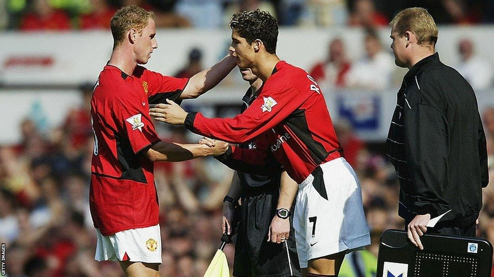
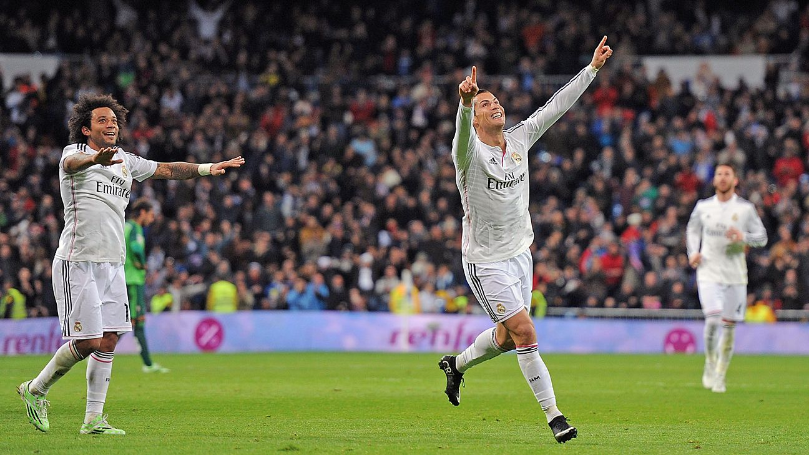
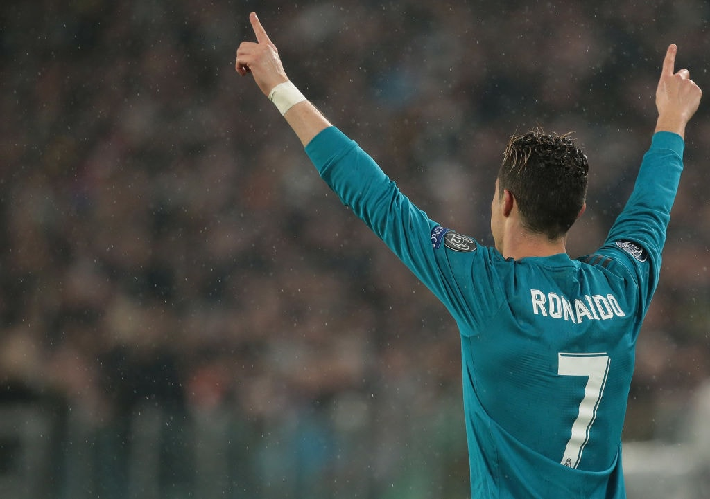

// 绰号进化史 · NICKNAME EVOLUTION
九个绰号 一部黑历史
从"小小罗"到"总裁"，每个绰号都是一段争议的注脚。
01

小小罗
2003-2006 · 曼联出道期
出道时巴西"大罗"罗纳尔多、"小罗"罗纳尔迪尼奥已封神，初来曼联的他按长幼被叫"小小罗"。方便面发型、踩单车花活、一碰就倒——这个称呼带着"小弟"的轻视，直到他在曼联踢出金球级表现才慢慢摘掉。
02
花罗
2004-2007 · 花哨期
沉迷盘带爱秀花活，一场踩十几个单车却贻误战机，被英格兰媒体讽刺为SHOWBOAT（华而不实）。范尼、阿兰·史密斯都因他"只花不传"在训练场爆发冲突。场外五颜六色奇葩着装更坐实"花"名。
03

水罗 / 跳水王
2005-2007 · 假摔期
2006世界杯对法国禁区假摔、足总杯对米堡假摔被英媒狂批"跳水"。弗格森2007年还嘴硬说漏嘴："罗纳尔多已经不假摔了。"——等于变相承认此前确实假摔。"水罗""跳水王"由此传开。
04

罗三票 / 票哥
2011-2014 · 调侃期
2011年欧足联最佳球员评选，梅西蝉联，C罗竟只获3票。球迷戏称"罗三票"，自嘲的粉丝则叫"票哥"。2014年他拿第三座金球后，黑粉又把"罗三票"升级为"罗三球"——怎么都要带个"三"。
05
沙漠骆驼
2023至今 · 沙特淘金期
2023年C罗以2亿欧元年薪远走沙特利雅得胜利，被嘲讽"去沙漠养老"。结果一待就是4年，期间4年才拿到1个联赛冠军，与梅西加盟迈阿密1个月即夺冠形成惨烈对比。"沙漠骆驼"既是地域调侃，也是对其"驮着数据走不出沙漠"的讽刺。
06

总裁
2014至今 · 巅峰期
最早是黑称——"总是靠裁判"，讽刺他进球靠裁判照顾、点球多。但C罗霸道形象、CR7商业帝国、多金多情的做派，反而让"总裁"黑出感情，被粉丝当作褒义供奉，成了他最响亮的标签。
07

球玊 / 典韦
2015至今 · 自封球王期
"球玊"把"球王"的"王"换成形近的"玊"（sù）——玊比王多一"点"，既讽其多一"点"（点球），发音又酷似C罗招牌庆祝动作"siu"，一语双关。"典韦"则谐音"点伟"，暗讽爱罚点球的"阿伟罗"。两个黑称都是罗黑圈的拆字顶流。
08

阿伟罗
长期 · 谐音戏称
取C罗全名"阿韦罗（Aveiro）"的"伟"，配上"阿"字戏谑化，读起来像"阿伟罗"——既谐音父姓Aveiro，又暗讽其关键战隐身时的"伟岸缺席"。是中文圈对C罗最戏谑的简称之一，常与"球玊""典韦"组合出现。
09
骡子
长期 · 谐音黑称
"罗"的谐音黑称，罗黑圈子传播极广。"骡子"既暗讽其"驮着数据走不远"（淘汰赛隐身），也带明显的侮辱色彩。常与"点罗""球玉"组合出现，构成中文互联网对C罗最密集的黑称矩阵。